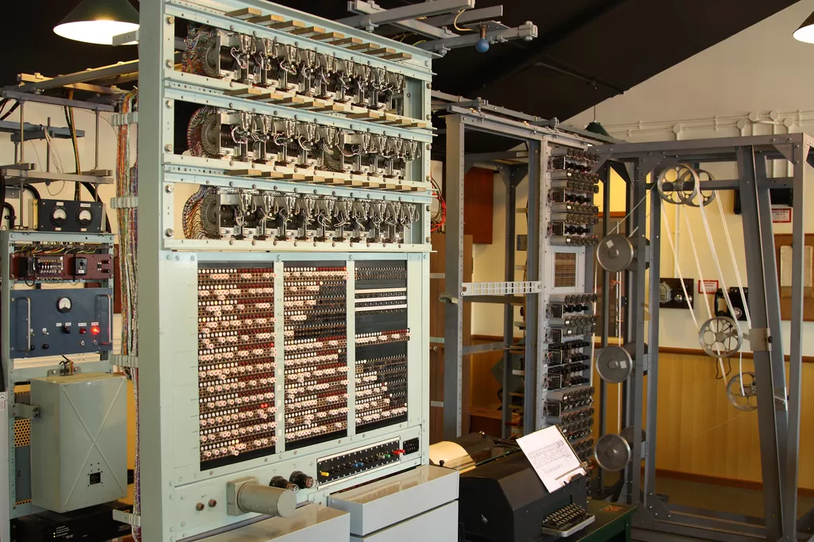
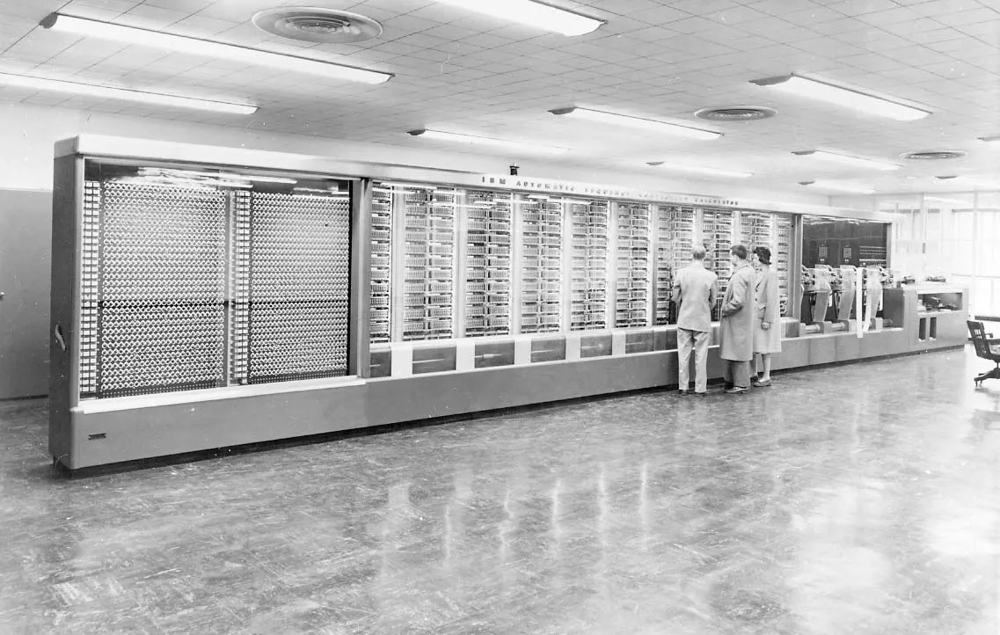
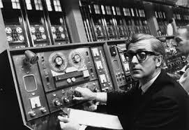

Introdução ao HTML
Surgimento da Internet
O surgimento da internet, como a conhecemos hoje, está ligada ao desenvolvimento dos primeiros computadores.
Inicialmente, esses computadores eram grandes e caros, sendo utilizados principalmente em instituições de pesquisa e
militares. Com o tempo, eles se tornaram mais acessíveis e utilizados em diversas áreas, surgindo a necessidade de
conectar essas máquinas para compartilhar informações e recursos.
Primeiros Computadores
ENIAC
Também conhecido como Electronic Numerical Integrator And Computer, Desenvolvido a pedido do exército dos Estados Unidos para seu laboratório de pesquisa balística, o ENIAC
pesava 30 toneladas e ocupava uma área de 180 m² de área construída. Já seu “sistema operacional” eram cartões perfurado operados por um time de funcionárias do exército, o que
as classifica como as primeiras programadoras que se tem notícia. Sua construção de iniciou em plena guerra, em 1943.
Apesar mostrado em 1946, só foi ser ligado pela primeira vez em julho de 47.

Colossus
Criado em janeiro de 1944, e tinha uma função nobre: decodificar mensagens trocadas entre
soldados nazistas, permitindo que os Aliados antecipassem e neutralizassem os movimentos inimigos. O Colossus é uma máquina formada por oito grandes “gabinetes” de 2,3 metros de altura, divididas em duas seções de 5,5
metros de comprimento.

Harvard Mark I
Composto de 750mil peças, entre chaves, relés e engrenagens, além de 800km de fios, tinha 15,5m de comprimento, 2,4m de altura e pesava 5 toneladas.
Mesmo com todo este tamanho, este “elefante” era capaz de realizar somas em 0,3s e multiplicações em 1s
Era um sistema eletromecânico (baseado em relés) que mesclava a tecnologia de cartões perfurados (que a IBM dominava) e
alguns circuitos eletrônicos simples, mas que já nasceu obsoleto quando concluído.
Isso porque o ENIAC, que era totalmente eletrônico, já estava sendo construído quando o ASCC entrou em operação.
Mesmo baseado em uma tecnologia já relativamente ultrapassada para sua época, visto que os computadores eletrônicos
(baseados em válvulas) eram centenas de vezes mais rápidos, sua confiabilidade e precisão de cálculos fizeram com que
funcionasse por quase 16 anos sem interrupção.
Nomes importantes da História
Grace Murray Hopper
Grace Murray Hopper foi almirante e
analista de sistemas da Marinha dos Estados Unidos nas décadas de 1940 e 1950, criadora da linguagem de programação de
alto nível Flow-Matic — base para a criação do COBOL — e uma das primeiras programadoras do computador
Harvard Mark I em 1944.
Em 1949, ela passou a participar do Eckert-Mauchly Computer Corporation e fez parte do time que desenvolveu o computador
UNIVAC I. Enquanto estava no Eckert-Mauchly, começou o desenvolvimento do seu compilador. O programa dela convertia
termos em Inglês para código de máquina e em 1952, tinha terminado o desenvolvimento do seu programa ligador
(originalmente chamado de compilador), o qual foi desenvolvido para o Sistema A-0. A concepção de Hopper de que havia a necessidade de se criar uma linguagem orientada para negócios comuns deu origem ao
acrônimo COBOL (Common Business Oriented Language).

Joseph Carls Robnett Licklider
Nascido em Saint Louis, no Missouri em 1915, Joseph Carl Robnett Licklider foi um grande estudioso, cursando três
graduações na Washington State University.Licklider buscava solucionar o problema de comunicação que os tripulantes sofriam nos barulhentos bombardeiros.Licklider percebeu que os computadores poderiam ser mais eficientes, trabalhar na SAGE lhe mostrou que computadores
deveriam ser dinâmicos para que se tornassem realmente úteis. Então, em 1960 publicou sua obra Man Computer Symbiosis, a
ideia era flexibilizar programas permitindo que homens e máquinas cooperem na construção de soluções.
Robert E. Kahn
Em meados da década de 1960, Robert Kahn começou a pensar em como os computadores com diferentes sistemas operativos
poderiam falar uns com os outros através de uma rede. No entanto, ele não pensou muito sobre o que eles diriam uns aos
outros.É por este trabalho em tecnologias de comunicação por pacotes - como parte do projeto que se tornou a ARPANET e nas
fundações da Internet - que Kahn está a ser galardoado com a Medalha de Honra do IEEE de 2024.
Client e Server
A internet funciona como uma grande rede de computadores, cada um com um papel específico. Nesse cenário, a relação
entre cliente e servidor é fundamental. Podemos imaginar o servidor como um restaurante e o cliente como um freguês.
O cliente é o dispositivo que solicita um serviço, como um navegador web acessando um site. Ao fazer uma solicitação, o
cliente envia uma mensagem para o servidor. O servidor, por sua vez, é um computador poderoso que armazena informações e
oferece serviços. Ele recebe a solicitação do cliente, processa a informação e envia uma resposta, como a página da web
solicitada.
O que é HTML?
HTML, sigla para HyperText Markup Language (Linguagem de Marcação de Hipertexto), é a linguagem fundamental para a
construção de páginas web. É como se fosse o esqueleto de um site, definindo a estrutura e o conteúdo de cada página.
Imagine o HTML como um conjunto de blocos de construção. Cada bloco representa um elemento da página, como um parágrafo,
uma imagem, um título ou um link. Esses elementos são definidos por tags, que são palavras-chave encerradas entre sinais
de menor e maior (< >). Ao combinar essas tags, você cria a estrutura básica de uma página web que pode ser interpretada
e exibida por navegadores como Chrome, Firefox ou Edge.
As tags HTML são como as peças de um quebra-cabeça que compõem as páginas da web. Elas são instruções que informam ao
navegador como interpretar e exibir o conteúdo de uma página. Cada tag possui um significado específico e determina a
estrutura e a formatação dos elementos que compõem a página.
Imagine que você está construindo uma casa. As tags HTML seriam os tijolos, as vigas e as telhas que formam a estrutura
da casa. Elas definem onde ficam as paredes, as portas, as janelas e tudo mais que compõe o ambiente. No caso das
páginas da web, as tags definem onde fica o título, os parágrafos, as imagens, os links e outros elementos que você vê
ao acessar um site.
A baixo segue uma tabela com as principais Tags do HTML:
| Tag |
Significado |
Função |
| HTML |
Ela indica ao navegador que o documento que está sendo processado é um documento HTML |
Define o início e o fim de um documento HTML |
| Head |
Contém informações importantes sobre o documento HTML, mas não é exibida diretamente no navegador. |
Um local onde se armazena metadados |
| Body |
Tudo o que o usuário vê ao acessar uma página está contido dentro da tag |
Contém o conteúdo visível da página. |
| Title |
É como um título para sua página na web |
Ela define o título que aparece na aba do navegador e nos resultados de busca |
| a |
Fundamental para criar links |
Ela define um âncora (anchor), que é um elemento clicável que leva o usuário para outra página/seção da
mesma página ou para um arquivo externo. |
| p |
Inicia um parágrafo |
Serve para definir um parágrafo de texto |
| br |
Permite que você force o texto a pular para a próxima linha, exatamente onde você a colocar |
Serve para inserir uma quebra de linha dentro de um texto |
| hr |
representa uma quebra temática entre elementos de nível de parágrafo |
Serve para criar uma linha horizontal que separa diferentes seções ou tópicos dentro de uma página. |
| h1/h2/h3... |
São utilizadas para definir os títulos e subtítulos de uma página web |
Estabelecem uma hierarquia de importância para o conteúdo, facilitando a leitura e a compreensão por parte dos usuários
e dos mecanismos de busca. |
| div |
É como um contêiner genérico |
A principal função da tag é agrupar elementos HTML para que você possa aplicar estilos a eles de forma conjunta usando
CSS |